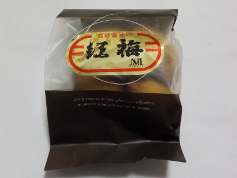
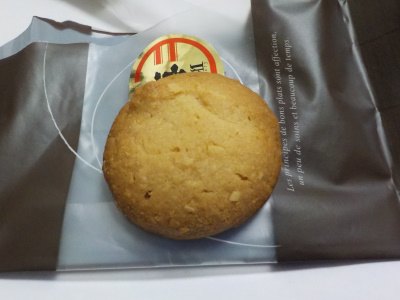
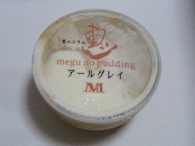
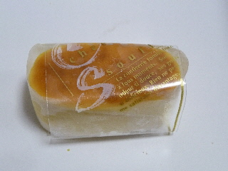
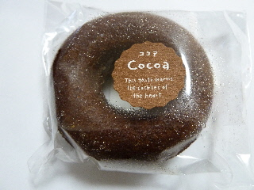
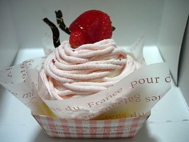
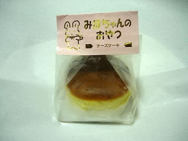

島根県出雲平田町7253
更新日 : 2018/12/31
醤油クッキーです。
紅梅醤油は美味しいです。その醤油を使ったクッキーはどんな味でしょうね。

サクサクと軽い感じのクッキーでした。

基本アーモンドクッキーかな。甘いクッキーの中に醤油の香ばしさがありました。
ちょっと大人な感じの複雑な味ですね。
更新日 : 2011/09/10
とってもやわらかいプリンだったので、持って帰る途中で形がくずれたようです。なので写真がちょっといまいちです。

食べてみると、アールグレイ味がしっかりありました。なので、プリンって感じがしませんでした。
ちょっと不思議な味ですね。珈琲ゼリーの紅茶版のような、違うような商品でした。

こっちはよく見るタイプのチーズスフレですね。
中がしっとりとしていてやわらかく、甘くて美味しかったです。「これいい！」って思いました。
更新日 : 2011/01/21
ココア味の焼きドーナッツです。

ここのドーナッツはケーキよりですね。
濃い味で、チョコケーキ風な感じがしました。
更新日 : 2009/4/10
ど～んと大きな苺もモンブランで、クリームが沢山のってますね。

イチゴ味のクリームが沢山食べれる！って思ったら、クリームがあっさりとした味でした。近頃流行りの、甘さ控えめ系のロールケーキっぽいクリーム味です。
牛乳味で軽くてあっさりとしたクリームで、パクパクといただけました。
苺は、ケーキの上と中で2個入っていました。
更新日 : 2008/7/20
一畑百貨店出雲店で販売しているのを買いました。
チーズケーキです。チーズの味もするんですけど、バニラクリームの味もしました。

クリーム味のケーキってちょっと変わってていいですね。
クリームパンのクリームのような味で、甘くて美味しかったです。
2007/2/12
ケーキ屋さんで大福？何故？って感じがしますね。
ケーキ屋さんなので（？）、大幅にアレンジされてて、いつもの苺大福とはまた違った味が楽しめます。
まずビックリするのが、大きさが大きい！。そして大福の皮の部分がピンク色で薄いので、餡の黒いのが透けてて、深いピンク色の饅頭って感じがインパクト大でした。
ミルク味の甘いクリームがたっぷり入ってて、とっても柔らかい食感でした。大福の皮も餡も甘かったですし、大きさのわりに苺が半分と小さかったので、あま～いがいっぱいで、「甘いもの食べたー！！」って感じがとてもしました。
個性的な商品って面白くていいですね。
更新日 : 2006/5/19
メモリーのレアチーズケーキですが、大きさが大きいので、食べ応えがバッチリありました。
しかもケーキのほとんどがレアチーズで出来ているので、たっぷり味わえます。
ケーキの上にはチョコとクリームが乗ってますし、ケーキの中にはかなり甘いブルーベリーソースが入ってますので、色んな味も楽しめてお得な気分です。
その分重たかったりまとまりが無かったしますけど、ケーキ自体が大きいので飽きがこないようになってるのかなーって感じでした。
更新日 : 2006/1/3
お正月からまたメモリーのケーキを食べました。今度は苺のショートケーキです。
クリームさっぱり、スポンジしっかり味のケーキでした。
「ん？この味は覚えがある味」「これはメモリーのロールケーキに似ている」っていうのが一番の感想でした。
普通のロールケーキよりも、こっちの方が甘い苺が上に乗ってるし、スポンジの間にも苺が入ってるのでこっちの方が美味しいかなって思いました。
更新日 : 2005/12/21
以前に、パティスリーメモリーが雲州洋菓子メモリーに変わったって書きましたけど、間違いでした。
パティスリーメモリーはそのまま営業してて、新規に雲州洋菓子メモリーがオープンしたようです。近くで２店舗営業するなんて凄いですね。
今回は雲集洋菓子メモリーで買い物をしたんですけど、次からはパティスリーメモリーに行こうと思いました。（近いので）
シュークリームは、クリームがわりとあっさり味でした。その代わりなんでしょうか？シュー生地が厚めで、ちょっと味が強かったです。
「みほちゃんのおやつ」は最近よくありがちなネーミングの、最近よくありがちな小さな袋入りチーズケーキでした。そんな感じの商品が多くなりましたね。
味もしっとり系のチーズケーキでありがちな感じです。
どこそこのお店の、何っていう名前の商品は何っていうのが分かりにくくなりましたね。（最近メモリーのお菓子を食べることがちょっと多かったです。）
更新日 : 2005/12/12
以前にイチゴロールを食べましたが、今回は普通の生ロールケーキを食べました。
イチゴロール同様、スポンジにしっかり味が付いているので、スポンジだけ食べても甘くておいしかったです。
スポンジが濃いぶん、卵のいい香りがするのも良かったです。
今回の生ロールですが、クリームが沢山入っているので、ケーキ自体がとってもやわらかいです。なので、包丁でカットするときは気をつけないとペチャって潰れてしまいます。
（ 私は潰ました。(#+_+) ）
クリーム事態はあまり味がないので、そんなにいっぱい入ってなくていい感じがしました。
でも、クリームの部分が多いとパッと見がいいんですよね。
更新日 : 2005/11/11
確か、「パティスリー メモリー」だったところが、お引越しをして「雲州洋菓子 メモリー」に名前が変わって今日オープンしました。
新住所は、出雲市平田町7253です。
ちょっと疑問なんですけど、どうして最近元平田市の方では「雲州」って名前を付けるところが多いんでしょうね？「平田市はなくなったけど平田って名前を残そう！」っていうならわかるんですけど、なぜ今「雲州」なんでしょう？
今日はオープン記念で、いちごのロールケーキが安かったので買って食べました。
デコレーションタイプで、ロールケーキの上に苺とブルーベリーが乗っててちょっと豪華な気分です。（その分お値段に反映しますけど）
スポンジがしっとりとしていて、生地自体の味が強く甘いです。
最近ふんわりとしたスポンジのものを多く食べてたので、新鮮でした。これはこれでおいしいですね。
生地が濃い分、クリームはあっさり味でバランスは良かったですが、個人的にはもっと苺味が欲しかったです。
しっとりしたケーキは口当たりがいいし、甘さが広がっていいですね。次は違う味のロールケーキが食べてみたいです。
【おいしいものを食べよう。】【たくさん寝よう。】
【ソロ活をしよう!】【季節感のあることをしよう。】【動画視聴はほどほどに。】【当サイトの全てのコンテンツは無断転載禁止です。】